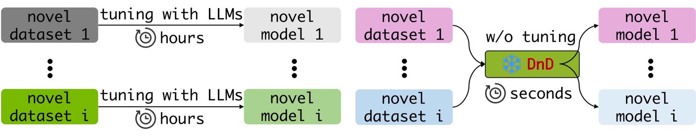
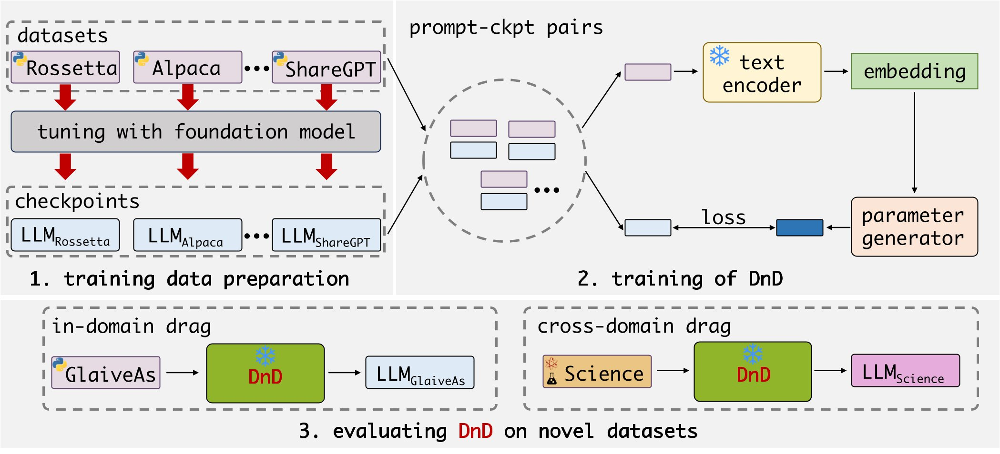
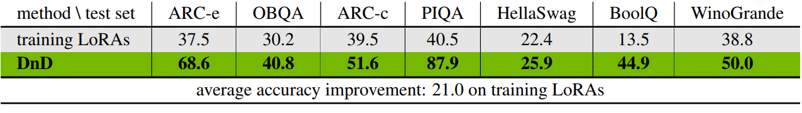
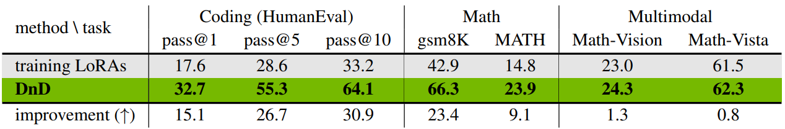
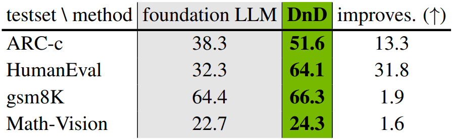
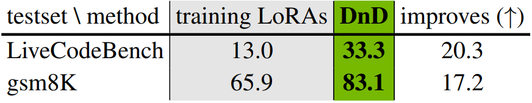
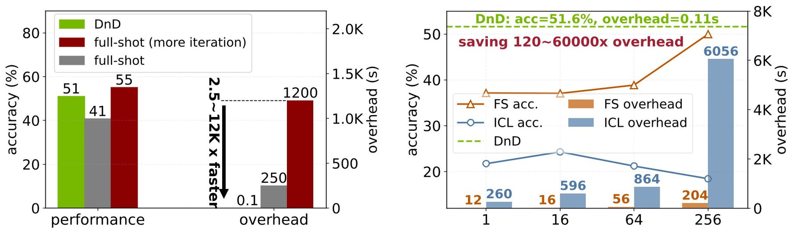

Despite strong zero-shot competence endowed by pre-training, Large Language Models (LLMs) still require task-specific customization for real-world applications. Parameter-Efficient Fine-Tuning (PEFT), such as LoRA, addresses this by introducing a small set of trainable parameters while keeping original weights frozen. However, it can only alleviate but not erase the cost of per-task-tuning, creating a major bottleneck for large-scale deployment.

We observe that a LoRA adapter is nothing more than a function of its training data: gradient descent “drags” the base weights towards a task-specific optimum. If that mapping from prompts to weights can be learned directly, we could bypass gradient descent altogether.





Utilizing fine-tuned LoRAs as training data, DnD establishes connections between input data prompts and model parameters. We test DnD's zero-shot ability by feeding it with prompts from datasets unseen in training and instruct it to generate parameters for novel datasets. Our method shows amazing improvment over the average of training LoRAs on zero-shot test sets, generalizes to multiple real-world tasks, and scales to various LLM sizes.

To further underscore DnD's magic power, we compare it with full-shot tuning, few-shot tuning (FS), and in-context learning (ICL). Surprisingly, DnD surpasses training LoRA's full-shot ability with 2500× speedup. With more iterations, full-shot tuning outperforms DnD, but at a cost of 12,000× latency. Also, DnD consistently outperforms FS and ICL before 256 shots. It is noteworthy that FS and ICL all rely on answers to the problems, but DnD requires only unlabeled prompts.
We sincerely appreciate Yuxiang Li, Jiaxin Wu, Zhiheng Chen, Lei Feng, Jingle Fu, Bohan Zhuang, Ziheng Qin, Zangwei Zheng, Zihan Qiu, Zexi Li, Gongfan Fang, Xinyin Ma, and Qinglin Lu for valuable discussions and feedbacks during this work.
Thank the community for all feedback and comments. DnD still has room for improvement in many aspects. Details are logged here , and we will update our paper on arXiv according to it.
@misc{liang2025draganddropllmszeroshotprompttoweights,
title={Drag-and-Drop LLMs: Zero-Shot Prompt-to-Weights},
author={Zhiyuan Liang and Dongwen Tang and Yuhao Zhou and Xuanlei Zhao and Mingjia Shi and Wangbo Zhao and Zekai Li and Peihao Wang and Konstantin Schürholt and Damian Borth and Michael M. Bronstein and Yang You and Zhangyang Wang and Kai Wang},
year={2025},
eprint={2506.16406},
archivePrefix={arXiv},
primaryClass={cs.LG},
url={https://arxiv.org/abs/2506.16406},
}